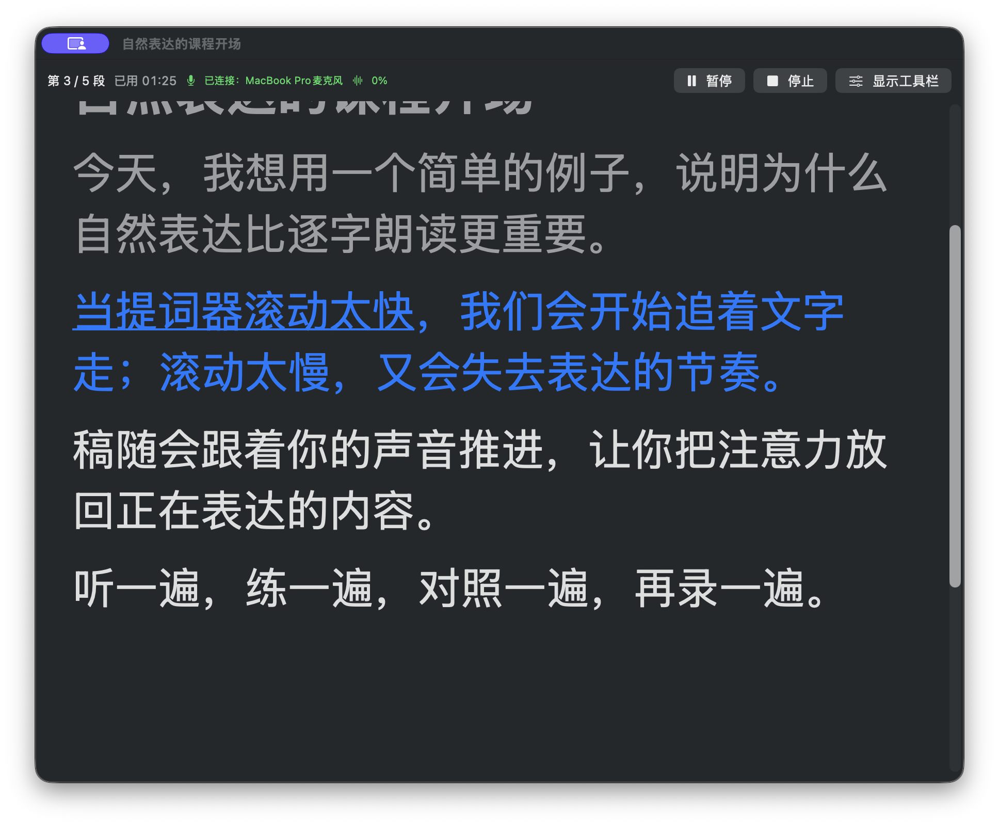
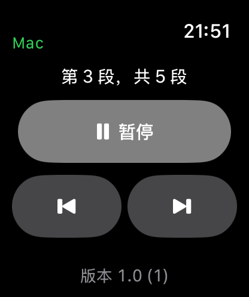
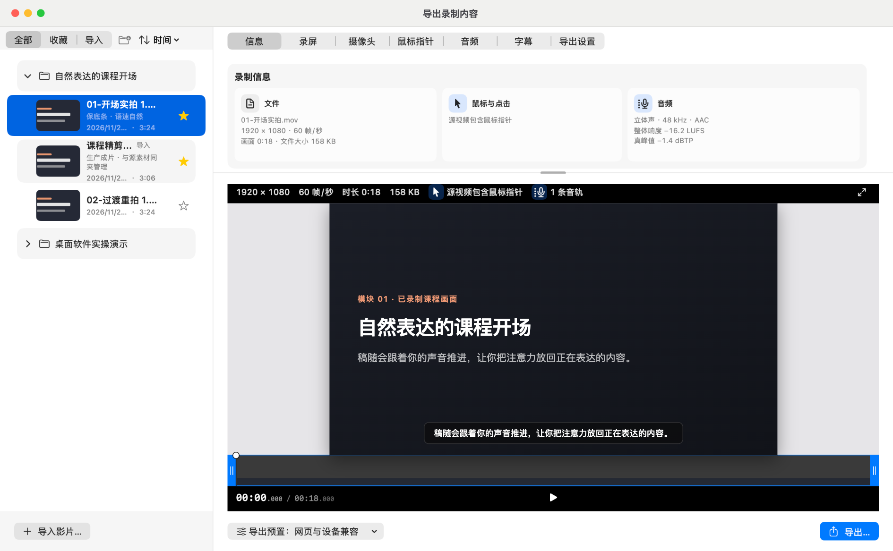

听顺语感
先让 Mac 系统朗读一遍，开机前听出书面长句的拗口处。
语音跟随提词
提词器实时识别你正在说的内容，语速快慢都能自然跟上：
从顺稿到实拍
先让 Mac 系统朗读一遍，开机前听出书面长句的拗口处。
在 iPhone 上随时跟读热身，把逐字稿练成自然口语。
开启贴镜头 Voice Follow，按讲稿内容随自然语速推进。
衔接语音跟随，支持临场发挥、口令重录、跳段与转录复盘。
左侧保留原讲稿，右侧按段落高亮匹配只读语音转录，方便复盘重录与临场发挥，同时保持原稿原样。

自动跟随与手动快调灵活配合
当你想大幅调整讲授顺序、一次跳过多个段落，或语音跟随偶发没跟上时，用镜头外的 iPhone 与免费配套的 Apple Watch 就能直接切到新段落继续跟读。



常见视频录制场景
现在就能搭配微单相机、连续互通相机或 OBS 开拍；内置 Mac 分层录屏即将加入。
搭配微单、连续互通相机或 OBS，提词窗紧贴镜头正下方，眼神始终看着观众。
几十段长课稿先听语感、在 iPhone 上排练熟悉，开机录制更顺畅。
用窗口或区域预置框定演示画面，拍完可快速合成，也可把分层素材与时间码交给 AI 或剪辑师。
即将推出：分层录屏、时间码与本地 MCP
在日常工作的 Mac 上用预置锁定目标窗口即可同步提词开拍；导出独立音画轨道的同时，还能用逐词时间码与本地 MCP 让 Codex、GitHub Copilot 或 Claude 协助初剪和打标，减少重复性工作。

倒计时归零同步启动采集与自然提词；拍完原地重调人像画中画、主体抠像与鼠标点击高亮，既可按预置一键出片，也可通过本地 MCP 把字幕与逐词时间码交给 AI 助手做粗剪筛选与章节标注。
内置窗口与区域预置，正在工作的 Mac 即可同时完成演示、贴镜头提词、多源采集与按讲稿归档。
导出时间零点对齐的纯净屏幕、透明人像与无损音轨，直接拖入 Final Cut、Premiere 或 DaVinci。
内置本地 MCP 服务，AI 工具可直接读取录制列表、.srt 与逐词时间码 JSON，辅助定位口误重录、生成章节标记与触发预置导出。
注：内置 Mac 录屏、导出归档工作台与本地 MCP 随 Ultra 版本即将发布，上线时间以 App Store 页面为准。
方案与免费试用
Pro 现已开放 7 天免费试用，足够完整录完一期口播或课程；即将推出的年度 Ultra 提供整整 1 个月免费试用。
现已上架，新订阅享 7 天免费试用
按月自动续期
含 7 天免费试用
按年自动续期
含 7 天免费试用，比按月省 33%
即将推出，年度订阅享 1 个月免费试用
按年自动续期
上线享 1 个月免费试用
一次性购买
买断制，不自动续费
符合条件的新订阅者可享 Pro 7 天免费试用或年度 Ultra 1 个月免费试用，试用期内可随时在 Apple 订阅设置中取消；Ultra 即将发布，最终价格与试用资格以 App Store 页面为准。
无需注册账号。练习语音不保存原始音频；内置录制与导入成片保存在本地 Mac，不上传稿随服务器。